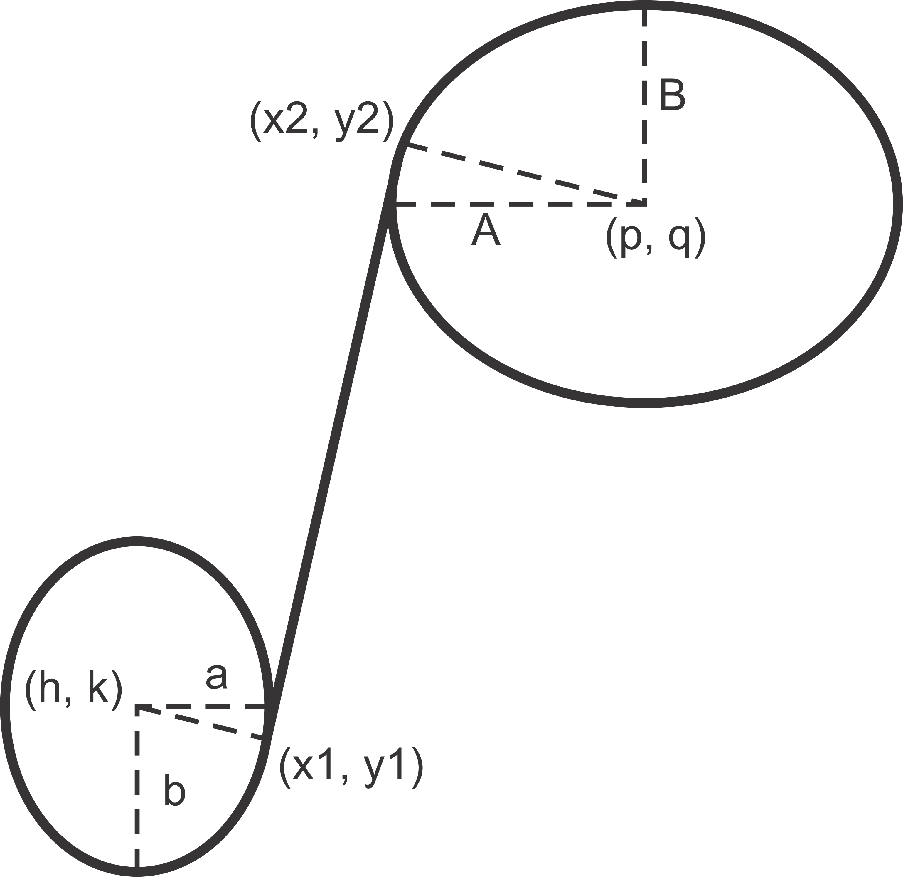

utils package
Submodules
utils.CustomNavBar module
- class utils.CustomNavBar.MyCustomToolbar(plotCanvas, parent, coordinates=True)[source]
Bases:
NavigationToolbar2QTMethods
RenderFlags(...)acceptDrops(self)accessibleDescription(self)accessibleName(self)actionAt(-> QAction)actionEvent(self, QActionEvent)actionGeometry(self, QAction)actions(self)activateWindow(self)addAction(-> QAction -> QAction -> QAction)addActions(self, Iterable[QAction])addSeparator(self)addWidget(self, QWidget)adjustSize(self)allowedAreas(self)autoFillBackground(self)back(*args)Move back up the view lim stack.
backgroundRole(self)baseSize(self)blockSignals(self, bool)changeEvent(self, QEvent)childAt(-> QWidget)children(self)childrenRect(self)childrenRegion(self)clear(self)clearFocus(self)clearMask(self)close(self)colorCount(self)contentsMargins(self)contentsRect(self)contextMenuPolicy(self)createWindowContainer(QWindow[, parent, flags])cursor(self)deleteLater(self)depth(self)devType(self)devicePixelRatio(self)devicePixelRatioF(self)devicePixelRatioFScale()disconnect(-> bool disconnect)drag_pan(event)Callback for dragging in pan/zoom mode.
drag_zoom(event)Callback for dragging in zoom mode.
draw_rubberband(event, x0, y0, x1, y1)Draw a rectangle rubberband to indicate zoom limits.
dumpObjectInfo(self)dumpObjectTree(self)dynamicPropertyNames(self)effectiveWinId(self)ensurePolished(self)event(self, QEvent)eventFilter(self, QObject, QEvent)find(PyQt5.sip.voidptr)findChild(-> QObject)findChildren(...)focusPolicy(self)focusProxy(self)focusWidget(self)font(self)fontInfo(self)fontMetrics(self)foregroundRole(self)forward(*args)Move forward in the view lim stack.
frameGeometry(self)frameSize(self)geometry(self)getContentsMargins(self)grab(self[, rectangle])grabGesture(self, Qt.GestureType, flags, ...)grabKeyboard(self)grabMouse(grabMouse)grabShortcut(self, Union[QKeySequence, ...)graphicsEffect(self)graphicsProxyWidget(self)hasFocus(self)hasHeightForWidth(self)hasMouseTracking(self)hasTabletTracking(self)height(self)heightForWidth(self, int)heightMM(self)hide(self)home(*args)Restore the original view.
iconSize(self)inherits(self, str)initStyleOption(self, QStyleOptionToolBar)inputMethodHints(self)inputMethodQuery(self, Qt.InputMethodQuery)insertAction(self, QAction, QAction)insertActions(self, QAction, Iterable[QAction])insertSeparator(self, QAction)insertWidget(self, QAction, QWidget)installEventFilter(self, QObject)isActiveWindow(self)isAncestorOf(self, QWidget)isAreaAllowed(self, Qt.ToolBarArea)isEnabled(self)isEnabledTo(self, QWidget)isFloatable(self)isFloating(self)isFullScreen(self)isHidden(self)isLeftToRight(self)isMaximized(self)isMinimized(self)isModal(self)isMovable(self)isRightToLeft(self)isVisible(self)isVisibleTo(self, QWidget)isWidgetType(self)isWindow(self)isWindowModified(self)isWindowType(self)keyboardGrabber()killTimer(self, int)layout(self)layoutDirection(self)locale(self)logicalDpiX(self)logicalDpiY(self)lower(self)mapFrom(self, QWidget, QPoint)mapFromGlobal(self, QPoint)mapFromParent(self, QPoint)mapTo(self, QWidget, QPoint)mapToGlobal(self, QPoint)mapToParent(self, QPoint)mask(self)maximumHeight(self)maximumSize(self)maximumWidth(self)metaObject(self)minimumHeight(self)minimumSize(self)minimumSizeHint(self)minimumWidth(self)mouseGrabber()move(move)moveToThread(self, QThread)nativeParentWidget(self)nextInFocusChain(self)normalGeometry(self)objectName(self)orientation(self)overrideWindowFlags(self, ...)overrideWindowState(self, ...)paintEngine(self)paintEvent(self, QPaintEvent)paintingActive(self)palette(self)pan(*args)Toggle the pan/zoom tool.
parent(self)parentWidget(self)physicalDpiX(self)physicalDpiY(self)pos(self)press_pan(event)Callback for mouse button press in pan/zoom mode.
press_zoom(event)Callback for mouse button press in zoom to rect mode.
previousInFocusChain(self)property(self, str)push_current()Push the current view limits and position onto the stack.
pyqtConfigure(...)Each keyword argument is either the name of a Qt property or a Qt signal.
raise_(self)rect(self)releaseKeyboard(self)releaseMouse(self)releaseShortcut(self, int)release_pan(event)Callback for mouse button release in pan/zoom mode.
release_zoom(event)Callback for mouse button release in zoom to rect mode.
removeAction(self, QAction)removeEventFilter(self, QObject)remove_rubberband()Remove the rubberband.
render(, sourceRegion, flags, ...)repaint(...)resize(resize)restoreGeometry(self, Union[QByteArray, ...)saveGeometry(self)save_figure(*args)Save the current figure.
screen(self)scroll(scroll)setAcceptDrops(self, bool)setAccessibleDescription(self, str)setAccessibleName(self, str)setAllowedAreas(self, Union[Qt.ToolBarAreas, ...)setAttribute(self, Qt.WidgetAttribute, on)setAutoFillBackground(self, bool)setBackgroundRole(self, QPalette.ColorRole)setBaseSize(setBaseSize)setContentsMargins(setContentsMargins)setContextMenuPolicy(self, Qt.ContextMenuPolicy)setCursor(self, Union[QCursor, Qt.CursorShape])setDisabled(self, bool)setEnabled(self, bool)setFixedHeight(self, int)setFixedSize(setFixedSize)setFixedWidth(self, int)setFloatable(self, bool)setFocus(setFocus)setFocusPolicy(self, Qt.FocusPolicy)setFocusProxy(self, QWidget)setFont(self, QFont)setForegroundRole(self, QPalette.ColorRole)setGeometry(setGeometry)setGraphicsEffect(self, QGraphicsEffect)setHidden(self, bool)setIconSize(self, QSize)setInputMethodHints(self, ...)setLayout(self, QLayout)setLayoutDirection(self, Qt.LayoutDirection)setLocale(self, QLocale)setMask(setMask)setMaximumHeight(self, int)setMaximumSize(setMaximumSize)setMaximumWidth(self, int)setMinimumHeight(self, int)setMinimumSize(setMinimumSize)setMinimumWidth(self, int)setMouseTracking(self, bool)setMovable(self, bool)setObjectName(self, str)setOrientation(self, Qt.Orientation)setPalette(self, QPalette)setParent(setParent)setProperty(self, str, Any)setShortcutAutoRepeat(self, int[, enabled])setShortcutEnabled(self, int[, enabled])setSizeIncrement(setSizeIncrement)setSizePolicy(setSizePolicy)setStatusTip(self, str)setStyle(self, QStyle)setStyleSheet(self, str)setTabOrder(QWidget, QWidget)setTabletTracking(self, bool)setToolButtonStyle(self, Qt.ToolButtonStyle)setToolTip(self, str)setToolTipDuration(self, int)setUpdatesEnabled(self, bool)setVisible(self, bool)setWhatsThis(self, str)setWindowFilePath(self, str)setWindowFlag(self, Qt.WindowType, on)setWindowFlags(self, Union[Qt.WindowFlags, ...)setWindowIcon(self, QIcon)setWindowIconText(self, str)setWindowModality(self, Qt.WindowModality)setWindowModified(self, bool)setWindowOpacity(self, float)setWindowRole(self, str)setWindowState(self, Union[Qt.WindowStates, ...)setWindowTitle(self, str)set_cursor(cursor)[Deprecated] Set the current cursor to one of the
Cursorsenums values.set_history_buttons()Enable or disable the back/forward button.
set_message(s)Display a message on toolbar or in status bar.
show(self)showFullScreen(self)showMaximized(self)showMinimized(self)showNormal(self)signalsBlocked(self)size(self)sizeHint(self)sizeIncrement(self)sizePolicy(self)stackUnder(self, QWidget)startTimer(self, int[, timerType])statusTip(self)style(self)styleSheet(self)testAttribute(self, Qt.WidgetAttribute)thread(self)toggleViewAction(self)toolButtonStyle(self)toolTip(self)toolTipDuration(self)tr(self, str[, disambiguation, n])underMouse(self)ungrabGesture(self, Qt.GestureType)unsetCursor(self)unsetLayoutDirection(self)unsetLocale(self)update()Reset the axes stack.
updateGeometry(self)updatesEnabled(self)visibleRegion(self)whatsThis(self)widgetForAction(self, QAction)width(self)widthMM(self)winId(self)window(self)windowFilePath(self)windowFlags(self)windowHandle(self)windowIcon(self)windowIconText(self)windowModality(self)windowOpacity(self)windowRole(self)windowState(self)windowTitle(self)windowType(self)x(self)y(self)zoom(*args)Toggle zoom to rect mode.
PaintDeviceMetric
RenderFlag
actionTriggered
allowedAreasChanged
childEvent
closeEvent
configure_subplots
connectNotify
contextMenuEvent
create
customContextMenuRequested
customEvent
decibel_scale
destroy
destroyed
disconnectNotify
dragEnterEvent
dragLeaveEvent
dragMoveEvent
dropEvent
edit_parameters
enterEvent
focusInEvent
focusNextChild
focusNextPrevChild
focusOutEvent
focusPreviousChild
hideEvent
iconSizeChanged
initPainter
inputMethodEvent
isSignalConnected
keyPressEvent
keyReleaseEvent
leaveEvent
linear_scale
log_scale
message
metric
mouseDoubleClickEvent
mouseMoveEvent
mousePressEvent
mouseReleaseEvent
mouse_move
movableChanged
moveEvent
nativeEvent
objectNameChanged
orientationChanged
rcParams
receivers
resizeEvent
sender
senderSignalIndex
sharedPainter
showEvent
tabletEvent
timerEvent
toggle_grid
toolButtonStyleChanged
topLevelChanged
updateMicroFocus
visibilityChanged
wheelEvent
windowIconChanged
windowIconTextChanged
windowTitleChanged
- class utils.CustomNavBar.SizeInputDialog(parent=None)[source]
Bases:
QDialogMethods
RenderFlags(...)accept(self)acceptDrops(self)accessibleDescription(self)accessibleName(self)actions(self)activateWindow(self)addAction(self, QAction)addActions(self, Iterable[QAction])adjustSize(self)autoFillBackground(self)backgroundRole(self)baseSize(self)blockSignals(self, bool)childAt(-> QWidget)children(self)childrenRect(self)childrenRegion(self)clearFocus(self)clearMask(self)close(self)closeEvent(self, QCloseEvent)colorCount(self)contentsMargins(self)contentsRect(self)contextMenuEvent(self, QContextMenuEvent)contextMenuPolicy(self)createWindowContainer(QWindow[, parent, flags])cursor(self)deleteLater(self)depth(self)devType(self)devicePixelRatio(self)devicePixelRatioF(self)devicePixelRatioFScale()disconnect(-> bool disconnect)done(self, int)dumpObjectInfo(self)dumpObjectTree(self)dynamicPropertyNames(self)effectiveWinId(self)ensurePolished(self)eventFilter(self, QObject, QEvent)exec(self)exec_(self)find(PyQt5.sip.voidptr)findChild(-> QObject)findChildren(...)focusPolicy(self)focusProxy(self)focusWidget(self)font(self)fontInfo(self)fontMetrics(self)foregroundRole(self)frameGeometry(self)frameSize(self)geometry(self)getContentsMargins(self)grab(self[, rectangle])grabGesture(self, Qt.GestureType, flags, ...)grabKeyboard(self)grabMouse(grabMouse)grabShortcut(self, Union[QKeySequence, ...)graphicsEffect(self)graphicsProxyWidget(self)hasFocus(self)hasHeightForWidth(self)hasMouseTracking(self)hasTabletTracking(self)height(self)heightForWidth(self, int)heightMM(self)hide(self)inherits(self, str)inputMethodHints(self)inputMethodQuery(self, Qt.InputMethodQuery)insertAction(self, QAction, QAction)insertActions(self, QAction, Iterable[QAction])installEventFilter(self, QObject)isActiveWindow(self)isAncestorOf(self, QWidget)isEnabled(self)isEnabledTo(self, QWidget)isFullScreen(self)isHidden(self)isLeftToRight(self)isMaximized(self)isMinimized(self)isModal(self)isRightToLeft(self)isSizeGripEnabled(self)isVisible(self)isVisibleTo(self, QWidget)isWidgetType(self)isWindow(self)isWindowModified(self)isWindowType(self)keyPressEvent(self, QKeyEvent)keyboardGrabber()killTimer(self, int)layout(self)layoutDirection(self)locale(self)logicalDpiX(self)logicalDpiY(self)lower(self)mapFrom(self, QWidget, QPoint)mapFromGlobal(self, QPoint)mapFromParent(self, QPoint)mapTo(self, QWidget, QPoint)mapToGlobal(self, QPoint)mapToParent(self, QPoint)mask(self)maximumHeight(self)maximumSize(self)maximumWidth(self)metaObject(self)minimumHeight(self)minimumSize(self)minimumSizeHint(self)minimumWidth(self)mouseGrabber()move(move)moveToThread(self, QThread)nativeParentWidget(self)nextInFocusChain(self)normalGeometry(self)objectName(self)open(self)overrideWindowFlags(self, ...)overrideWindowState(self, ...)paintEngine(self)paintingActive(self)palette(self)parent(self)parentWidget(self)physicalDpiX(self)physicalDpiY(self)pos(self)previousInFocusChain(self)property(self, str)pyqtConfigure(...)Each keyword argument is either the name of a Qt property or a Qt signal.
raise_(self)rect(self)reject(self)releaseKeyboard(self)releaseMouse(self)releaseShortcut(self, int)removeAction(self, QAction)removeEventFilter(self, QObject)render(, sourceRegion, flags, ...)repaint(...)resize(resize)resizeEvent(self, QResizeEvent)restoreGeometry(self, Union[QByteArray, ...)result(self)saveGeometry(self)screen(self)scroll(scroll)setAcceptDrops(self, bool)setAccessibleDescription(self, str)setAccessibleName(self, str)setAttribute(self, Qt.WidgetAttribute, on)setAutoFillBackground(self, bool)setBackgroundRole(self, QPalette.ColorRole)setBaseSize(setBaseSize)setContentsMargins(setContentsMargins)setContextMenuPolicy(self, Qt.ContextMenuPolicy)setCursor(self, Union[QCursor, Qt.CursorShape])setDisabled(self, bool)setEnabled(self, bool)setFixedHeight(self, int)setFixedSize(setFixedSize)setFixedWidth(self, int)setFocus(setFocus)setFocusPolicy(self, Qt.FocusPolicy)setFocusProxy(self, QWidget)setFont(self, QFont)setForegroundRole(self, QPalette.ColorRole)setGeometry(setGeometry)setGraphicsEffect(self, QGraphicsEffect)setHidden(self, bool)setInputMethodHints(self, ...)setLayout(self, QLayout)setLayoutDirection(self, Qt.LayoutDirection)setLocale(self, QLocale)setMask(setMask)setMaximumHeight(self, int)setMaximumSize(setMaximumSize)setMaximumWidth(self, int)setMinimumHeight(self, int)setMinimumSize(setMinimumSize)setMinimumWidth(self, int)setModal(self, bool)setMouseTracking(self, bool)setObjectName(self, str)setPalette(self, QPalette)setParent(setParent)setProperty(self, str, Any)setResult(self, int)setShortcutAutoRepeat(self, int[, enabled])setShortcutEnabled(self, int[, enabled])setSizeGripEnabled(self, bool)setSizeIncrement(setSizeIncrement)setSizePolicy(setSizePolicy)setStatusTip(self, str)setStyle(self, QStyle)setStyleSheet(self, str)setTabOrder(QWidget, QWidget)setTabletTracking(self, bool)setToolTip(self, str)setToolTipDuration(self, int)setUpdatesEnabled(self, bool)setVisible(self, bool)setWhatsThis(self, str)setWindowFilePath(self, str)setWindowFlag(self, Qt.WindowType, on)setWindowFlags(self, Union[Qt.WindowFlags, ...)setWindowIcon(self, QIcon)setWindowIconText(self, str)setWindowModality(self, Qt.WindowModality)setWindowModified(self, bool)setWindowOpacity(self, float)setWindowRole(self, str)setWindowState(self, Union[Qt.WindowStates, ...)setWindowTitle(self, str)show(self)showEvent(self, QShowEvent)showFullScreen(self)showMaximized(self)showMinimized(self)showNormal(self)signalsBlocked(self)size(self)sizeHint(self)sizeIncrement(self)sizePolicy(self)stackUnder(self, QWidget)startTimer(self, int[, timerType])statusTip(self)style(self)styleSheet(self)testAttribute(self, Qt.WidgetAttribute)thread(self)toolTip(self)toolTipDuration(self)tr(self, str[, disambiguation, n])underMouse(self)ungrabGesture(self, Qt.GestureType)unsetCursor(self)unsetLayoutDirection(self)unsetLocale(self)update(update update update -> None -> None)updateGeometry(self)updatesEnabled(self)visibleRegion(self)whatsThis(self)width(self)widthMM(self)winId(self)window(self)windowFilePath(self)windowFlags(self)windowHandle(self)windowIcon(self)windowIconText(self)windowModality(self)windowOpacity(self)windowRole(self)windowState(self)windowTitle(self)windowType(self)x(self)y(self)DialogCode
PaintDeviceMetric
RenderFlag
accepted
actionEvent
button_press
changeEvent
childEvent
connectNotify
create
customContextMenuRequested
customEvent
destroy
destroyed
disconnectNotify
dragEnterEvent
dragLeaveEvent
dragMoveEvent
dropEvent
enterEvent
event
finished
focusInEvent
focusNextChild
focusNextPrevChild
focusOutEvent
focusPreviousChild
getInputs
hideEvent
initPainter
inputMethodEvent
isOkay
isSignalConnected
keyReleaseEvent
leaveEvent
metric
mouseDoubleClickEvent
mouseMoveEvent
mousePressEvent
mouseReleaseEvent
moveEvent
nativeEvent
objectNameChanged
paintEvent
receivers
rejected
sender
senderSignalIndex
sharedPainter
tabletEvent
timerEvent
updateMicroFocus
validating
wheelEvent
windowIconChanged
windowIconTextChanged
windowTitleChanged
utils.create_project module
utils.file_reader module
utils.hom_coupler_orientation module
utils.house_keeping module
utils.mat2python module
utils.mayavi_test module
utils.misc_functions module
utils.mode_spectral_line_code module
utils.newton_cavity_opt module
utils.p3x1 module
utils.pareto_test_problem module
utils.plot_objects module
utils.plotter module
utils.port_power module
utils.quick_plot module
utils.readtop module
utils.shared_classes module
- class utils.shared_classes.EndRoutine(frame, projectDir)[source]
Bases:
QThreadMethods
blockSignals(self, bool)children(self)currentThread()currentThreadId()deleteLater(self)disconnect(-> bool disconnect)dumpObjectInfo(self)dumpObjectTree(self)dynamicPropertyNames(self)event(self, QEvent)eventDispatcher(self)eventFilter(self, QObject, QEvent)exec(self)exec_(self)exit(self[, returnCode])findChild(-> QObject)findChildren(...)idealThreadCount()inherits(self, str)installEventFilter(self, QObject)isFinished(self)isInterruptionRequested(self)isRunning(self)isWidgetType(self)isWindowType(self)killTimer(self, int)loopLevel(self)metaObject(self)moveToThread(self, QThread)msleep(int)objectName(self)parent(self)priority(self)property(self, str)pyqtConfigure(...)Each keyword argument is either the name of a Qt property or a Qt signal.
quit(self)removeEventFilter(self, QObject)requestInterruption(self)run(self)setEventDispatcher(self, ...)setObjectName(self, str)setParent(self, QObject)setPriority(self, QThread.Priority)setProperty(self, str, Any)setStackSize(self, int)setTerminationEnabled([enabled])signalsBlocked(self)sleep(int)stackSize(self)start(self[, priority])startTimer(self, int[, timerType])terminate(self)thread(self)tr(self, str[, disambiguation, n])usleep(int)wait(-> bool)yieldCurrentThread()Priority
childEvent
combine_dict
connectNotify
customEvent
delete_process_dict
destroyed
disconnectNotify
end_routine
finished
isSignalConnected
objectNameChanged
receivers
sender
senderSignalIndex
started
timerEvent
- class utils.shared_classes.MathTextLabel(mathText, parent=None)[source]
Bases:
QWidgetMethods
RenderFlags(...)acceptDrops(self)accessibleDescription(self)accessibleName(self)actionEvent(self, QActionEvent)actions(self)activateWindow(self)addAction(self, QAction)addActions(self, Iterable[QAction])adjustSize(self)autoFillBackground(self)backgroundRole(self)baseSize(self)blockSignals(self, bool)changeEvent(self, QEvent)childAt(-> QWidget)children(self)childrenRect(self)childrenRegion(self)clearFocus(self)clearMask(self)close(self)closeEvent(self, QCloseEvent)colorCount(self)contentsMargins(self)contentsRect(self)contextMenuEvent(self, QContextMenuEvent)contextMenuPolicy(self)create(self[, window, initializeWindow, ...])createWindowContainer(QWindow[, parent, flags])cursor(self)deleteLater(self)depth(self)destroy(self[, destroyWindow, destroySubWindows])devType(self)devicePixelRatio(self)devicePixelRatioF(self)devicePixelRatioFScale()disconnect(-> bool disconnect)dragEnterEvent(self, QDragEnterEvent)dragLeaveEvent(self, QDragLeaveEvent)dragMoveEvent(self, QDragMoveEvent)dropEvent(self, QDropEvent)dumpObjectInfo(self)dumpObjectTree(self)dynamicPropertyNames(self)effectiveWinId(self)ensurePolished(self)enterEvent(self, QEvent)event(self, QEvent)eventFilter(self, QObject, QEvent)find(PyQt5.sip.voidptr)findChild(-> QObject)findChildren(...)focusInEvent(self, QFocusEvent)focusNextChild(self)focusNextPrevChild(self, bool)focusOutEvent(self, QFocusEvent)focusPolicy(self)focusPreviousChild(self)focusProxy(self)focusWidget(self)font(self)fontInfo(self)fontMetrics(self)foregroundRole(self)frameGeometry(self)frameSize(self)geometry(self)getContentsMargins(self)grab(self[, rectangle])grabGesture(self, Qt.GestureType, flags, ...)grabKeyboard(self)grabMouse(grabMouse)grabShortcut(self, Union[QKeySequence, ...)graphicsEffect(self)graphicsProxyWidget(self)hasFocus(self)hasHeightForWidth(self)hasMouseTracking(self)hasTabletTracking(self)height(self)heightForWidth(self, int)heightMM(self)hide(self)hideEvent(self, QHideEvent)inherits(self, str)initPainter(self, QPainter)inputMethodEvent(self, QInputMethodEvent)inputMethodHints(self)inputMethodQuery(self, Qt.InputMethodQuery)insertAction(self, QAction, QAction)insertActions(self, QAction, Iterable[QAction])installEventFilter(self, QObject)isActiveWindow(self)isAncestorOf(self, QWidget)isEnabled(self)isEnabledTo(self, QWidget)isFullScreen(self)isHidden(self)isLeftToRight(self)isMaximized(self)isMinimized(self)isModal(self)isRightToLeft(self)isVisible(self)isVisibleTo(self, QWidget)isWidgetType(self)isWindow(self)isWindowModified(self)isWindowType(self)keyPressEvent(self, QKeyEvent)keyReleaseEvent(self, QKeyEvent)keyboardGrabber()killTimer(self, int)layout(self)layoutDirection(self)leaveEvent(self, QEvent)locale(self)logicalDpiX(self)logicalDpiY(self)lower(self)mapFrom(self, QWidget, QPoint)mapFromGlobal(self, QPoint)mapFromParent(self, QPoint)mapTo(self, QWidget, QPoint)mapToGlobal(self, QPoint)mapToParent(self, QPoint)mask(self)maximumHeight(self)maximumSize(self)maximumWidth(self)metaObject(self)metric(self, QPaintDevice.PaintDeviceMetric)minimumHeight(self)minimumSize(self)minimumSizeHint(self)minimumWidth(self)mouseDoubleClickEvent(self, QMouseEvent)mouseGrabber()mouseMoveEvent(self, QMouseEvent)mousePressEvent(self, QMouseEvent)mouseReleaseEvent(self, QMouseEvent)move(move)moveEvent(self, QMoveEvent)moveToThread(self, QThread)nativeEvent(self, Union[QByteArray, bytes, ...)nativeParentWidget(self)nextInFocusChain(self)normalGeometry(self)objectName(self)overrideWindowFlags(self, ...)overrideWindowState(self, ...)paintEngine(self)paintEvent(self, QPaintEvent)paintingActive(self)palette(self)parent(self)parentWidget(self)physicalDpiX(self)physicalDpiY(self)pos(self)previousInFocusChain(self)property(self, str)pyqtConfigure(...)Each keyword argument is either the name of a Qt property or a Qt signal.
raise_(self)rect(self)releaseKeyboard(self)releaseMouse(self)releaseShortcut(self, int)removeAction(self, QAction)removeEventFilter(self, QObject)render(, sourceRegion, flags, ...)repaint(...)resize(resize)resizeEvent(self, QResizeEvent)restoreGeometry(self, Union[QByteArray, ...)saveGeometry(self)screen(self)scroll(scroll)setAcceptDrops(self, bool)setAccessibleDescription(self, str)setAccessibleName(self, str)setAttribute(self, Qt.WidgetAttribute, on)setAutoFillBackground(self, bool)setBackgroundRole(self, QPalette.ColorRole)setBaseSize(setBaseSize)setContentsMargins(setContentsMargins)setContextMenuPolicy(self, Qt.ContextMenuPolicy)setCursor(self, Union[QCursor, Qt.CursorShape])setDisabled(self, bool)setEnabled(self, bool)setFixedHeight(self, int)setFixedSize(setFixedSize)setFixedWidth(self, int)setFocus(setFocus)setFocusPolicy(self, Qt.FocusPolicy)setFocusProxy(self, QWidget)setFont(self, QFont)setForegroundRole(self, QPalette.ColorRole)setGeometry(setGeometry)setGraphicsEffect(self, QGraphicsEffect)setHidden(self, bool)setInputMethodHints(self, ...)setLayout(self, QLayout)setLayoutDirection(self, Qt.LayoutDirection)setLocale(self, QLocale)setMask(setMask)setMaximumHeight(self, int)setMaximumSize(setMaximumSize)setMaximumWidth(self, int)setMinimumHeight(self, int)setMinimumSize(setMinimumSize)setMinimumWidth(self, int)setMouseTracking(self, bool)setObjectName(self, str)setPalette(self, QPalette)setParent(setParent)setProperty(self, str, Any)setShortcutAutoRepeat(self, int[, enabled])setShortcutEnabled(self, int[, enabled])setSizeIncrement(setSizeIncrement)setSizePolicy(setSizePolicy)setStatusTip(self, str)setStyle(self, QStyle)setStyleSheet(self, str)setTabOrder(QWidget, QWidget)setTabletTracking(self, bool)setToolTip(self, str)setToolTipDuration(self, int)setUpdatesEnabled(self, bool)setVisible(self, bool)setWhatsThis(self, str)setWindowFilePath(self, str)setWindowFlag(self, Qt.WindowType, on)setWindowFlags(self, Union[Qt.WindowFlags, ...)setWindowIcon(self, QIcon)setWindowIconText(self, str)setWindowModality(self, Qt.WindowModality)setWindowModified(self, bool)setWindowOpacity(self, float)setWindowRole(self, str)setWindowState(self, Union[Qt.WindowStates, ...)setWindowTitle(self, str)sharedPainter(self)show(self)showEvent(self, QShowEvent)showFullScreen(self)showMaximized(self)showMinimized(self)showNormal(self)signalsBlocked(self)size(self)sizeHint(self)sizeIncrement(self)sizePolicy(self)stackUnder(self, QWidget)startTimer(self, int[, timerType])statusTip(self)style(self)styleSheet(self)tabletEvent(self, QTabletEvent)testAttribute(self, Qt.WidgetAttribute)thread(self)toolTip(self)toolTipDuration(self)tr(self, str[, disambiguation, n])underMouse(self)ungrabGesture(self, Qt.GestureType)unsetCursor(self)unsetLayoutDirection(self)unsetLocale(self)update(update update update -> None -> None)updateGeometry(self)updateMicroFocus(self)updatesEnabled(self)visibleRegion(self)whatsThis(self)wheelEvent(self, QWheelEvent)width(self)widthMM(self)winId(self)window(self)windowFilePath(self)windowFlags(self)windowHandle(self)windowIcon(self)windowIconText(self)windowModality(self)windowOpacity(self)windowRole(self)windowState(self)windowTitle(self)windowType(self)x(self)y(self)PaintDeviceMetric
RenderFlag
childEvent
connectNotify
customContextMenuRequested
customEvent
destroyed
disconnectNotify
isSignalConnected
objectNameChanged
receivers
sender
senderSignalIndex
timerEvent
windowIconChanged
windowIconTextChanged
windowTitleChanged
- class utils.shared_classes.MonitorConvergence(frame)[source]
Bases:
QThreadMethods
blockSignals(self, bool)children(self)currentThread()currentThreadId()deleteLater(self)disconnect(-> bool disconnect)dumpObjectInfo(self)dumpObjectTree(self)dynamicPropertyNames(self)event(self, QEvent)eventDispatcher(self)eventFilter(self, QObject, QEvent)exec(self)exec_(self)exit(self[, returnCode])findChild(-> QObject)findChildren(...)idealThreadCount()inherits(self, str)installEventFilter(self, QObject)isFinished(self)isInterruptionRequested(self)isRunning(self)isWidgetType(self)isWindowType(self)killTimer(self, int)loopLevel(self)metaObject(self)moveToThread(self, QThread)msleep(int)objectName(self)parent(self)priority(self)property(self, str)pyqtConfigure(...)Each keyword argument is either the name of a Qt property or a Qt signal.
quit(self)removeEventFilter(self, QObject)requestInterruption(self)run(self)setEventDispatcher(self, ...)setObjectName(self, str)setParent(self, QObject)setPriority(self, QThread.Priority)setProperty(self, str, Any)setStackSize(self, int)setTerminationEnabled([enabled])signalsBlocked(self)sleep(int)stackSize(self)start(self[, priority])startTimer(self, int[, timerType])terminate(self)thread(self)tr(self, str[, disambiguation, n])usleep(int)wait(-> bool)yieldCurrentThread()Priority
childEvent
connectNotify
customEvent
destroyed
disconnectNotify
finished
isSignalConnected
monitor_convergence
objectNameChanged
receivers
sender
senderSignalIndex
sig
started
timerEvent
- sig
int = …, arguments: Sequence = …) -> PYQT_SIGNAL
types is normally a sequence of individual types. Each type is either a type object or a string that is the name of a C++ type. Alternatively each type could itself be a sequence of types each describing a different overloaded signal. name is the optional C++ name of the signal. If it is not specified then the name of the class attribute that is bound to the signal is used. revision is the optional revision of the signal that is exported to QML. If it is not specified then 0 is used. arguments is the optional sequence of the names of the signal’s arguments.
- Type
pyqtSignal(*types, name
- Type
str = …, revision
- class utils.shared_classes.ProgressMonitor(frame, projectDir)[source]
Bases:
QThreadMethods
blockSignals(self, bool)children(self)currentThread()currentThreadId()deleteLater(self)disconnect(-> bool disconnect)dumpObjectInfo(self)dumpObjectTree(self)dynamicPropertyNames(self)event(self, QEvent)eventDispatcher(self)eventFilter(self, QObject, QEvent)exec(self)exec_(self)exit(self[, returnCode])findChild(-> QObject)findChildren(...)idealThreadCount()inherits(self, str)installEventFilter(self, QObject)isFinished(self)isInterruptionRequested(self)isRunning(self)isWidgetType(self)isWindowType(self)killTimer(self, int)loopLevel(self)metaObject(self)moveToThread(self, QThread)msleep(int)objectName(self)parent(self)priority(self)property(self, str)pyqtConfigure(...)Each keyword argument is either the name of a Qt property or a Qt signal.
quit(self)removeEventFilter(self, QObject)requestInterruption(self)run(self)setEventDispatcher(self, ...)setObjectName(self, str)setParent(self, QObject)setPriority(self, QThread.Priority)setProperty(self, str, Any)setStackSize(self, int)setTerminationEnabled([enabled])signalsBlocked(self)sleep(int)stackSize(self)start(self[, priority])startTimer(self, int[, timerType])terminate(self)thread(self)tr(self, str[, disambiguation, n])usleep(int)wait(-> bool)yieldCurrentThread()Priority
childEvent
connectNotify
customEvent
destroyed
disconnectNotify
finished
isSignalConnected
objectNameChanged
progress_monitor
receivers
sender
senderSignalIndex
sig
started
timerEvent
- sig
int = …, arguments: Sequence = …) -> PYQT_SIGNAL
types is normally a sequence of individual types. Each type is either a type object or a string that is the name of a C++ type. Alternatively each type could itself be a sequence of types each describing a different overloaded signal. name is the optional C++ name of the signal. If it is not specified then the name of the class attribute that is bound to the signal is used. revision is the optional revision of the signal that is exported to QML. If it is not specified then 0 is used. arguments is the optional sequence of the names of the signal’s arguments.
- Type
pyqtSignal(*types, name
- Type
str = …, revision
- class utils.shared_classes.QCheckableComboBox(*args, **kwargs)[source]
Bases:
QComboBoxMethods
Methods
RenderFlags(...)acceptDrops(self)accessibleDescription(self)accessibleName(self)actions(self)activateWindow(self)addAction(self, QAction)addActions(self, Iterable[QAction])addItem(addItem)addItems(self, Iterable[str])adjustSize(self)autoFillBackground(self)backgroundRole(self)baseSize(self)blockSignals(self, bool)changeEvent(self, QEvent)childAt(-> QWidget)children(self)childrenRect(self)childrenRegion(self)clear(self)clearEditText(self)clearFocus(self)clearMask(self)close(self)colorCount(self)completer(self)contentsMargins(self)contentsRect(self)contextMenuEvent(self, QContextMenuEvent)contextMenuPolicy(self)count(self)createWindowContainer(QWindow[, parent, flags])currentData(self[, role])currentIndex(self)currentText(self)cursor(self)deleteLater(self)depth(self)devType(self)devicePixelRatio(self)devicePixelRatioF(self)devicePixelRatioFScale()disconnect(-> bool disconnect)dumpObjectInfo(self)dumpObjectTree(self)duplicatesEnabled(self)dynamicPropertyNames(self)effectiveWinId(self)ensurePolished(self)event(self, QEvent)eventFilter(self, QObject, QEvent)find(PyQt5.sip.voidptr)findChild(-> QObject)findChildren(...)findData(self, Any[, role, flags])findText(self, str[, flags])focusInEvent(self, QFocusEvent)focusOutEvent(self, QFocusEvent)focusPolicy(self)focusProxy(self)focusWidget(self)font(self)fontInfo(self)fontMetrics(self)foregroundRole(self)frameGeometry(self)frameSize(self)geometry(self)getContentsMargins(self)grab(self[, rectangle])grabGesture(self, Qt.GestureType, flags, ...)grabKeyboard(self)grabMouse(grabMouse)grabShortcut(self, Union[QKeySequence, ...)graphicsEffect(self)graphicsProxyWidget(self)hasFocus(self)hasFrame(self)hasHeightForWidth(self)hasMouseTracking(self)hasTabletTracking(self)height(self)heightForWidth(self, int)heightMM(self)hide(self)hideEvent(self, QHideEvent)hidePopup(self)iconSize(self)inherits(self, str)initStyleOption(self, QStyleOptionComboBox)inputMethodEvent(self, QInputMethodEvent)inputMethodHints(self)inputMethodQuery(-> Any)insertAction(self, QAction, QAction)insertActions(self, QAction, Iterable[QAction])insertItem(insertItem)insertItems(self, int, Iterable[str])insertPolicy(self)insertSeparator(self, int)installEventFilter(self, QObject)isActiveWindow(self)isAncestorOf(self, QWidget)isEditable(self)isEnabled(self)isEnabledTo(self, QWidget)isFullScreen(self)isHidden(self)isLeftToRight(self)isMaximized(self)isMinimized(self)isModal(self)isRightToLeft(self)isVisible(self)isVisibleTo(self, QWidget)isWidgetType(self)isWindow(self)isWindowModified(self)isWindowType(self)itemData(self, int[, role])itemDelegate(self)itemIcon(self, int)itemText(self, int)keyPressEvent(self, QKeyEvent)keyReleaseEvent(self, QKeyEvent)keyboardGrabber()killTimer(self, int)layout(self)layoutDirection(self)lineEdit(self)locale(self)logicalDpiX(self)logicalDpiY(self)lower(self)mapFrom(self, QWidget, QPoint)mapFromGlobal(self, QPoint)mapFromParent(self, QPoint)mapTo(self, QWidget, QPoint)mapToGlobal(self, QPoint)mapToParent(self, QPoint)mask(self)maxCount(self)maxVisibleItems(self)maximumHeight(self)maximumSize(self)maximumWidth(self)metaObject(self)minimumContentsLength(self)minimumHeight(self)minimumSize(self)minimumSizeHint(self)minimumWidth(self)model(self)modelColumn(self)mouseGrabber()mousePressEvent(self, QMouseEvent)mouseReleaseEvent(self, QMouseEvent)move(move)moveToThread(self, QThread)nativeParentWidget(self)nextInFocusChain(self)normalGeometry(self)objectName(self)overrideWindowFlags(self, ...)overrideWindowState(self, ...)paintEngine(self)paintEvent(self, QPaintEvent)paintingActive(self)palette(self)parent(self)parentWidget(self)physicalDpiX(self)physicalDpiY(self)placeholderText(self)pos(self)previousInFocusChain(self)property(self, str)pyqtConfigure(...)Each keyword argument is either the name of a Qt property or a Qt signal.
raise_(self)rect(self)releaseKeyboard(self)releaseMouse(self)releaseShortcut(self, int)removeAction(self, QAction)removeEventFilter(self, QObject)removeItem(self, int)render(, sourceRegion, flags, ...)repaint(...)resize(resize)resizeEvent(self, QResizeEvent)restoreGeometry(self, Union[QByteArray, ...)rootModelIndex(self)saveGeometry(self)screen(self)scroll(scroll)setAcceptDrops(self, bool)setAccessibleDescription(self, str)setAccessibleName(self, str)setAttribute(self, Qt.WidgetAttribute, on)setAutoFillBackground(self, bool)setBackgroundRole(self, QPalette.ColorRole)setBaseSize(setBaseSize)setCompleter(self, QCompleter)setContentsMargins(setContentsMargins)setContextMenuPolicy(self, Qt.ContextMenuPolicy)setCurrentIndex(self, int)setCurrentText(self, str)setCursor(self, Union[QCursor, Qt.CursorShape])setDisabled(self, bool)setDuplicatesEnabled(self, bool)setEditText(self, str)setEditable(self, bool)setEnabled(self, bool)setFixedHeight(self, int)setFixedSize(setFixedSize)setFixedWidth(self, int)setFocus(setFocus)setFocusPolicy(self, Qt.FocusPolicy)setFocusProxy(self, QWidget)setFont(self, QFont)setForegroundRole(self, QPalette.ColorRole)setFrame(self, bool)setGeometry(setGeometry)setGraphicsEffect(self, QGraphicsEffect)setHidden(self, bool)setIconSize(self, QSize)setInputMethodHints(self, ...)setInsertPolicy(self, QComboBox.InsertPolicy)setItemData(self, int, Any[, role])setItemDelegate(self, QAbstractItemDelegate)setItemIcon(self, int, QIcon)setItemText(self, int, str)setLayout(self, QLayout)setLayoutDirection(self, Qt.LayoutDirection)setLineEdit(self, QLineEdit)setLocale(self, QLocale)setMask(setMask)setMaxCount(self, int)setMaxVisibleItems(self, int)setMaximumHeight(self, int)setMaximumSize(setMaximumSize)setMaximumWidth(self, int)setMinimumContentsLength(self, int)setMinimumHeight(self, int)setMinimumSize(setMinimumSize)setMinimumWidth(self, int)setModel(self, QAbstractItemModel)setModelColumn(self, int)setMouseTracking(self, bool)setObjectName(self, str)setPalette(self, QPalette)setParent(setParent)setPlaceholderText(self, str)setProperty(self, str, Any)setRootModelIndex(self, QModelIndex)setShortcutAutoRepeat(self, int[, enabled])setShortcutEnabled(self, int[, enabled])setSizeAdjustPolicy(self, ...)setSizeIncrement(setSizeIncrement)setSizePolicy(setSizePolicy)setStatusTip(self, str)setStyle(self, QStyle)setStyleSheet(self, str)setTabOrder(QWidget, QWidget)setTabletTracking(self, bool)setToolTip(self, str)setToolTipDuration(self, int)setUpdatesEnabled(self, bool)setValidator(self, QValidator)setView(self, QAbstractItemView)setVisible(self, bool)setWhatsThis(self, str)setWindowFilePath(self, str)setWindowFlag(self, Qt.WindowType, on)setWindowFlags(self, Union[Qt.WindowFlags, ...)setWindowIcon(self, QIcon)setWindowIconText(self, str)setWindowModality(self, Qt.WindowModality)setWindowModified(self, bool)setWindowOpacity(self, float)setWindowRole(self, str)setWindowState(self, Union[Qt.WindowStates, ...)setWindowTitle(self, str)show(self)showEvent(self, QShowEvent)showFullScreen(self)showMaximized(self)showMinimized(self)showNormal(self)showPopup(self)signalsBlocked(self)size(self)sizeAdjustPolicy(self)sizeHint(self)sizeIncrement(self)sizePolicy(self)stackUnder(self, QWidget)startTimer(self, int[, timerType])statusTip(self)style(self)styleSheet(self)testAttribute(self, Qt.WidgetAttribute)thread(self)timerEvent(self, QTimerEvent)toolTip(self)toolTipDuration(self)tr(self, str[, disambiguation, n])underMouse(self)ungrabGesture(self, Qt.GestureType)unsetCursor(self)unsetLayoutDirection(self)unsetLocale(self)update(update update update -> None -> None)updateGeometry(self)updatesEnabled(self)validator(self)view(self)visibleRegion(self)whatsThis(self)wheelEvent(self, QWheelEvent)width(self)widthMM(self)winId(self)window(self)windowFilePath(self)windowFlags(self)windowHandle(self)windowIcon(self)windowIconText(self)windowModality(self)windowOpacity(self)windowRole(self)windowState(self)windowTitle(self)windowType(self)x(self)y(self)InsertPolicy
PaintDeviceMetric
RenderFlag
SizeAdjustPolicy
actionEvent
activated
childEvent
closeEvent
connectNotify
create
currentIndexChanged
currentTextChanged
customContextMenuRequested
customEvent
destroy
destroyed
disconnectNotify
dragEnterEvent
dragLeaveEvent
dragMoveEvent
dropEvent
editTextChanged
enterEvent
focusNextChild
focusNextPrevChild
focusPreviousChild
highlighted
initPainter
isSignalConnected
leaveEvent
metric
mouseDoubleClickEvent
mouseMoveEvent
moveEvent
nativeEvent
objectNameChanged
receivers
sender
senderSignalIndex
sharedPainter
tabletEvent
textActivated
textHighlighted
updateMicroFocus
updateText
windowIconChanged
windowIconTextChanged
windowTitleChanged
- class Delegate[source]
Bases:
QStyledItemDelegateMethods
blockSignals(self, bool)children(self)createEditor(self, QWidget, ...)deleteLater(self)destroyEditor(self, QWidget, QModelIndex)disconnect(-> bool disconnect)displayText(self, Any, QLocale)dumpObjectInfo(self)dumpObjectTree(self)dynamicPropertyNames(self)editorEvent(self, QEvent, ...)event(self, QEvent)eventFilter(self, QObject, QEvent)findChild(-> QObject)findChildren(...)helpEvent(self, QHelpEvent, ...)inherits(self, str)initStyleOption(self, QStyleOptionViewItem, ...)installEventFilter(self, QObject)isWidgetType(self)isWindowType(self)itemEditorFactory(self)killTimer(self, int)metaObject(self)moveToThread(self, QThread)objectName(self)paint(self, QPainter, QStyleOptionViewItem, ...)parent(self)property(self, str)pyqtConfigure(...)Each keyword argument is either the name of a Qt property or a Qt signal.
removeEventFilter(self, QObject)setEditorData(self, QWidget, QModelIndex)setItemEditorFactory(self, QItemEditorFactory)setModelData(self, QWidget, ...)setObjectName(self, str)setParent(self, QObject)setProperty(self, str, Any)signalsBlocked(self)sizeHint(self, QStyleOptionViewItem, QModelIndex)startTimer(self, int[, timerType])thread(self)tr(self, str[, disambiguation, n])updateEditorGeometry(self, QWidget, ...)EndEditHint
childEvent
closeEditor
commitData
connectNotify
customEvent
destroyed
disconnectNotify
isSignalConnected
objectNameChanged
receivers
sender
senderSignalIndex
sizeHintChanged
timerEvent
utils.shared_functions module
- utils.shared_functions.animate_height(widget, min_height, standard, enable, option='max')[source]
- Parameters
widget (QWidget) – QWidget
min_height (float) – Minimum width
standard (float) – Default size
enable –
option –
- utils.shared_functions.animate_width(widget, min_width, standard, enable, option='max')[source]
- Parameters
widget (QWidget) – QWidget
min_width (float) – Minimum width
standard (float) – Default size
enable –
option –
- utils.shared_functions.arcTo2(x_center, y_center, a, b, step, start_angle, end_angle, plot=False)[source]
- utils.shared_functions.button_clicked(button)[source]
Return text on button clicked
- Parameters
button (QPushButton) – PyQt object
- Return type
String containing text on PyQt object
- utils.shared_functions.calculate_alpha(A, B, a, b, Ri, L, Req, L_bp)[source]
Calculates the largest angle the tangent line of two ellipses makes with the horizontal axis
- Parameters
A (float) –
B (float) –
a (float) –
b (float) –
Ri (float) –
L (float) –
Req (float) –
L_bp (float) –
- Returns
alpha (float) – Largest angle the tangent line of two ellipses makes with the horizontal axis
error_msg (int) – State of the iteration, failed or successful. Refer to
- utils.shared_functions.ellipse_tangent(z, *data)[source]
Calculates the coordinates of the tangent line that connects two ellipses
 - Parameters
z (list, array like) – Contains list of tangent points coordinate’s variables
[x1, y1, x2, y2]. Seeellipse tangentdata (list, array like) – Contains midpoint coordinates of the two ellipses and the dimensions of the ellipses data =
[coords, dim];coords=[h, k, p, q],dim=[a, b, A, B]
- Return type
list of four non-linear functions
Note
The four returned non-linear functions are
\[ \begin{align}\begin{aligned}f_1 = \frac{A^2b^2(x_1 - h)(y_2-q)}{a^2B^2(x_2-p)(y_1-k)} - 1\\f_2 = \frac{(x_1 - h)^2}{a^2} + \frac{(y_1-k)^2}{b^2} - 1\\f_3 = \frac{(x_2 - p)^2}{A^2} + \frac{(y_2-q)^2}{B^2} - 1\\f_4 = \frac{-b^2(x_1-x_2)(x_1-h)}{a^2(y_1-y_2)(y_1-k)} - 1\end{aligned}\end{align} \]
{kind=link}
- utils.shared_functions.f2b_slashes(path)[source]
Replaces forward slashes with backward slashes for windows OS
- Parameters
path (str) – Directory path
- utils.shared_functions.linspace(start, stop, step=1.0)[source]
Like np.linspace but uses step instead of num This is inclusive to stop, so if start=1, stop=3, step=0.5 Output is: array([1., 1.5, 2., 2.5, 3.])
- utils.shared_functions.load_shape_space(filename)[source]
Loads shape space file to Python dictionary object
Appears to have no usage
- Parameters
filename (str) – Absolute path of shape space file
- Return type
Python dictionary object of shape space
- utils.shared_functions.perform_geometry_checks(par_mid, par_end)[source]
Checks geometry to filter out low loss cavity geometries
- Parameters
par_mid (list, array like) – Mid cell parameters of cavity
par_end (list, array like) – End cell parameters of cavity
- Return type
bool
- utils.shared_functions.quad_stroud3(rdim, degree)[source]
Stroud-3 quadrature in \([0,1]^k\)
- Parameters
rdim (int) – Dimension of variables
degree (int) – Degree
- Return type
Nodes and corresponding weights
- utils.shared_functions.stroud(p)[source]
Stroud-3 method
- Parameters
p (int) – Dimension
- Return type
Nodes of quadrature rule in [0,1]**p (column-wise)
- utils.shared_functions.text_to_list__(ll)[source]
Convert text input to list
- Parameters
ll (str) – Input text
- Return type
List
- utils.shared_functions.update_alpha(cell)[source]
Update geometry json file variables to include the value of alpha
- Parameters
cell – Cavity geometry parameters
- Return type
List of cavity geometry parameters
- utils.shared_functions.uq(key, shape, qois, n_cells, n_modules, n_modes, f_shift, bc, parentDir, projectDir)[source]
- utils.shared_functions.write_cavity_for_custom_eig_solver(file_path, n_cell, mid_cell, end_cell_left=None, end_cell_right=None, beampipe='none', plot=False)[source]
- utils.shared_functions.write_cst_paramters(key, ic_, oc, projectDir, cell_type)[source]
Writes cavity geometric data that can be imported into CST Studio
- Parameters
key (str, int) – Cavity marker
ic (list, array like) – Inner cavity cell geometric variables
oc (list, array like) – Outer cavity cell geometric variables
projectDir (str) – Project directory
cell_type (str) – Single cell or multicell
utils.test module
- utils.test.ellipse_tangent(z, *data)[source]
Calculates the coordinates of the tangent line that connects two ellipses
- Parameters
z (list, array like) – Contains list of tangent points coordinate’s variables
[x1, y1, x2, y2]. Seeellipse tangentdata (list, array like) – Contains midpoint coordinates of the two ellipses and the dimensions of the ellipses data =
[coords, dim];coords=[h, k, p, q],dim=[a, b, A, B]
- Return type
list of four non-linear functions
Note
The four returned non-linear functions are
\[ \begin{align}\begin{aligned}f_1 = \frac{A^2b^2(x_1 - h)(y_2-q)}{a^2B^2(x_2-p)(y_1-k)} - 1\\f_2 = \frac{(x_1 - h)^2}{a^2} + \frac{(y_1-k)^2}{b^2} - 1\\f_3 = \frac{(x_2 - p)^2}{A^2} + \frac{(y_2-q)^2}{B^2} - 1\\f_4 = \frac{-b^2(x_1-x_2)(x_1-h)}{a^2(y_1-y_2)(y_1-k)} - 1\end{aligned}\end{align} \]